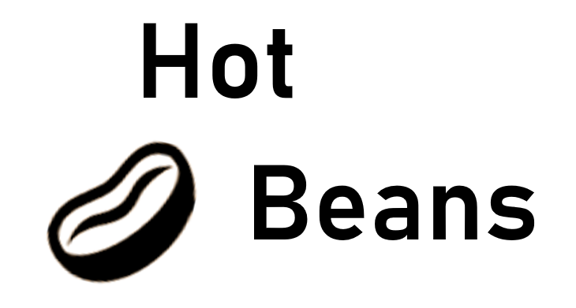

Web Development
Here are three members of our current trainees, if yopu decide to join our compasny you will be working alongside these guys in your journey to becime a fully qualified web developer.
John has been with us for a couple of months now, the only experience he has is imedia at GCSE level. he has already leant so much from a hands on web developing job and is excited to see how much more he is going to learn from working with us.
Jane has a degree in Graphic Design but wanted to expand her knowledge and train to become a web developer, she is very passionate about creating clean and effective designs and is looking forward to be able top apply this to websites that she is going to create in the future.
Mike has a Master's degree in Business Administration and has been working in project management for over 10 years. However, he is keen to understand how websites are created and work so he has decided to join hot beans in order to do so.